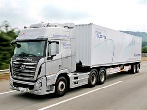
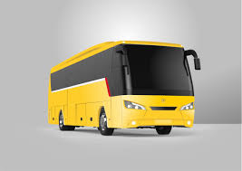
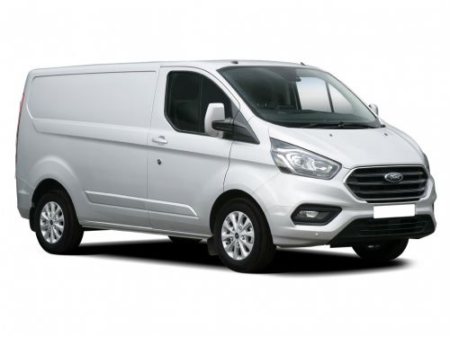
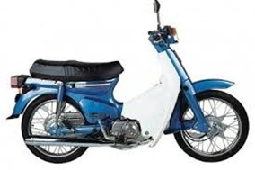

Auten von Autos
Es gibt verschiedene Arten von Autos, wie Lastwagen, Busse, Lieferwagen oder Motorräder .
Lastkraftwagen
Ein Lastkraftwagen ist ein Kraftfahrzeug, das zum Transport von Waren und Gütern bestimmt ist. Im Gegensatz zu Autos, die normalerweise eine Monocoque-Konstruktion haben, werden viele Lastwagen auf einer stabilen Struktur gebaut, die als Chassis bezeichnet wird. Der größte Teil der Struktur besteht aus einem tragenden Chassis, normalerweise einem Strukturrahmen, einer Kabine und einer Struktur (oder einem Kasten) zum Transport der Ladung.
Busse
Bus, Bus, Route, Bus, Bondi, Bus, Micro oder Bus (siehe Abschnitt "Regionalismen") sind die gebräuchlichsten Bezeichnungen für Fahrzeuge, mit denen zahlreiche Menschen über städtische Straßen transportiert werden sollen. Es wird in der Regel im öffentlichen Nah- und Nahverkehr und mit fester Fahrtroute eingesetzt. Die Kapazität kann zwischen 10 und 120 Passagieren variieren.
Ban
Ein Van, Bus oder Van ist ein leichtes Nutzfahrzeug für den Transport von Gütern oder Personengruppen. Ein Van hat einen orthogonalen und überdachten Laderaum auf der Rückseite, im Gegensatz zu einem Pickup, der ihn im Freien hat. In einigen Fällen hat dieser Bereich mehrere Sitzreihen, in anderen Fällen ist er leer, um große Gegenstände zu transportieren. Im letzteren Fall kann die Seitenbrille durch eine Fortsetzung der Folie ersetzt werden.
Motorräder
Ein Motorrad, das allgemein auf Spanisch als Abkürzung Motorrad bekannt ist, ist ein Zweiradfahrzeug, das von einem Motor angetrieben wird, der das Hinterrad antreibt, in seltenen Ausnahmen, in denen der Impuls im Vorderrad oder in beiden Fällen größer als 50 auftreten würde cm³, wenn es sich um eine interne Verbrennung handelt und die maximale Konstruktionsgeschwindigkeit mehr als 45 km / h beträgt.Der Rahmen oder das Fahrgestell und die Räder bilden die grundlegende Struktur des Fahrzeugs. Das Lenkrad ist vorne. Sie können bis zu zwei Personen transportieren
